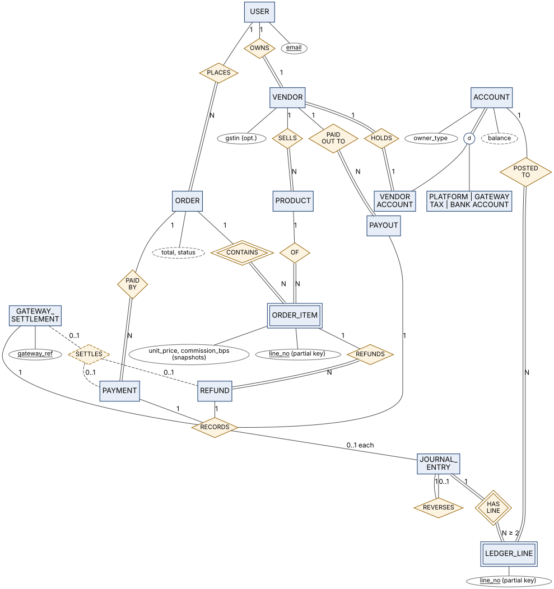
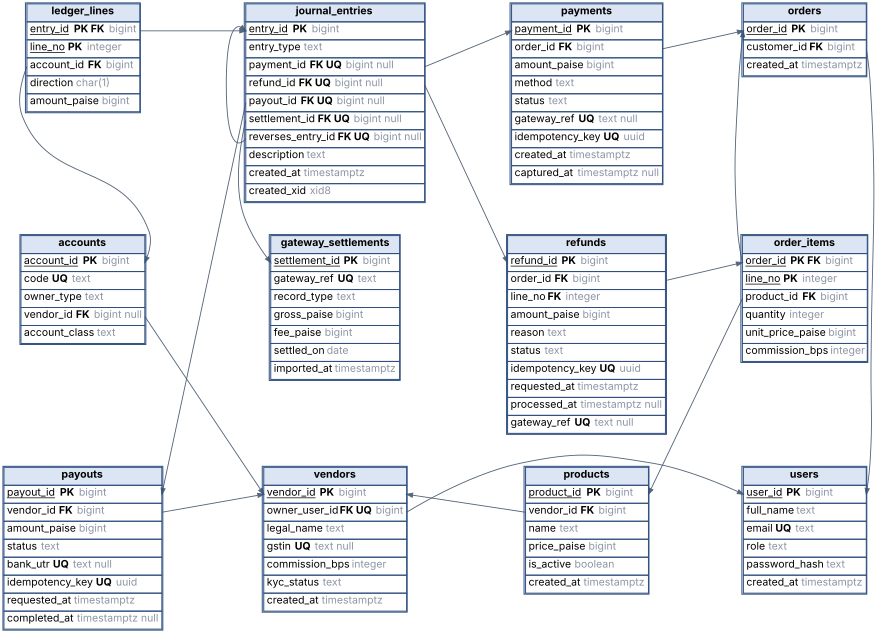

| Team member | Student ID | Team member | Student ID |
|---|---|---|---|
| Aluri Venkata Sai Anirudh | 2023B2AD0824H | Parth Gupta | 2023B4AD0741H |
| Yash Jain | 2023B2A80958H | Harsha Vardhan | 2023B4AD1155H |
| Aryan Saini | 2024A2PS1154H |
Repository: https://github.com/slashyash/PayRail · tag final, commit ____________
On a marketplace the customer pays the platform, not the seller. From one payment the platform must keep its commission, set aside GST on that commission, owe the rest to one or more vendors, process refunds, pay vendors out, and check that the payment gateway actually settled what the books say. Systems that keep a mutable balance column fail in predictable ways: two concurrent payouts read the same balance, one table is updated and another is not, history is overwritten, and gateway differences cannot be explained.
PayRail records every money movement as a double-entry journal entry whose debits equal its credits. The ledger is append-only, balances are derived from it, and every financial workflow is one atomic stored function protected by constraints, triggers, row locks and idempotency keys. The database application role cannot bypass these rules; administrators remain trusted. In scope: catalogue, multi-vendor orders, simulated payment capture with commission/GST split, line-level refunds, vendor payouts, gateway settlement import and reconciliation, finance and vendor reports. Out of scope: shipping, stock, real gateway/bank (both simulated), GST on goods, TCS.
| User | What they do |
|---|---|
| Customer | Browses and searches the catalogue, places multi-vendor orders, pays at the simulated gateway, requests refunds on individual order lines. |
| Vendor admin | Creates/edits/archives products; sees a ledger-derived balance and a running-balance statement; requests payouts; sees own reports. |
| Finance admin | Approves/rejects refunds, marks payouts paid/failed, imports gateway settlement CSVs, runs reconciliation, reads the trial balance and reports. |
| Gateway (simulated) | Hosted checkout with test instruments; HMAC-signed capture/failure callbacks that may be retried; a settlement report (T+2). |
| # | Workflow | Steps (UI → API → stored function) | DBMS aspect |
|---|---|---|---|
| W1 | Checkout and capture | Cart → fn_place_order (price/commission snapshots) → fn_initiate_payment → gateway callback → fn_capture_payment posts one balanced capture entry | transaction, row lock on the order, partial UNIQUE index, idempotency |
| W2 | Vendor payout | fn_request_payout locks the vendor account, checks the derived balance, posts Dr payable / Cr bank; finance fn_complete_payout paid or failed (one reversal) | SELECT … FOR UPDATE, concurrency, reversal entry |
| W3 | Line refund | Customer fn_request_refund reserves the amount; finance fn_approve_refund posts the cumulative allocation or fn_reject_refund releases it | integrity check under a line lock, exact rounding |
| W4 | Settlement and reporting | CSV import → fn_record_settlement (exact matches posted) → fn_reconcile(as_of); reports R1–R6 (trial balance, statement, monthly, refund risk, aging, payables) | savepoint per row, CTEs, window functions, GROUPING SETS |
BIGINT paise; no floating point anywhere. Rounding is integer round-half-up.
| Notation | Meaning in this model |
|---|---|
| Double rectangle / double diamond | Weak entity and its identifying relationship: ORDER_ITEM (owner ORDER) and LEDGER_LINE (owner JOURNAL_ENTRY), each identified by the owner key + partial key line_no. |
| Double line · 1, N, 0..1 | Total participation and cardinality, e.g. every PRODUCT is sold by a VENDOR; ORDER 1:N PAYMENT (retries); each payment/refund/payout/settlement is RECORDED by at most one journal entry; JOURNAL_ENTRY REVERSES at most one other entry; every entry has ≥ 2 lines. |
| Circle “d” | Disjoint, total specialisation of ACCOUNT on owner_type into vendor / platform / gateway / tax / bank accounts; only a vendor account takes part in HOLDS. |
| Dashed ellipse | Derived attributes (order total and status, account balance): computed by views, never stored. |
| Dashed diamond | SETTLES is a logical 0..1 : 0..1 match on gateway_ref, deliberately not a foreign key: a settlement report may contain references we have never seen. |
Primary key underlined, foreign keys italic. Every column is NOT NULL unless marked (null). Money = BIGINT paise; surrogate keys = BIGINT identity; times = TIMESTAMPTZ (IST for business dates). Schema payrail, file db/schema/02_tables.sql. ★ = added during implementation (§9).
| Relation | Attributes | Other keys / references |
|---|---|---|
| users | user_id, full_name, email, role ∈ {customer, vendor_admin, finance_admin}, password_hash ★ (bcrypt), created_at | UNIQUE(email) |
| vendors | vendor_id, owner_user_id, legal_name, gstin (null), commission_bps, kyc_status ∈ {pending, verified, rejected}, created_at | owner_user_id → users, UNIQUE (1:1 OWNS); UNIQUE(gstin) |
| products | product_id, vendor_id, name, price_paise, is_active, created_at | → vendors; UNIQUE(vendor_id, name) |
| orders | order_id, customer_id, created_at | customer_id → users |
| order_items (weak) | order_id, line_no, product_id, quantity, unit_price_paise, commission_bps | → orders ON DELETE CASCADE; → products; UNIQUE(order_id, product_id) |
| payments | payment_id, order_id, amount_paise, method ∈ {upi, card, netbanking}, status ∈ {initiated, captured, failed}, gateway_ref (null), idempotency_key, created_at, captured_at (null) | → orders; UNIQUE(gateway_ref), UNIQUE(idempotency_key); partial UNIQUE(order_id) WHERE captured |
| refunds | refund_id, order_id, line_no, amount_paise, reason, status ∈ {requested, processed, rejected}, idempotency_key, requested_at, processed_at (null), gateway_ref ★ (null) | (order_id, line_no) → order_items; UNIQUE(idempotency_key), UNIQUE(gateway_ref) |
| payouts | payout_id, vendor_id, amount_paise, status ∈ {requested, paid, failed}, bank_utr (null), idempotency_key, requested_at, completed_at (null) | → vendors; UNIQUE(bank_utr), UNIQUE(idempotency_key) |
| gateway_settlements | settlement_id, gateway_ref, record_type ★ ∈ {payment, refund}, gross_paise, fee_paise, settled_on, imported_at ★ | UNIQUE(gateway_ref); no FK (logical match only) |
| accounts | account_id, code, owner_type ∈ {platform, vendor, gateway, tax, bank}, vendor_id (null), account_class ∈ {asset, liability, revenue, expense} | → vendors; UNIQUE(code); UNIQUE NULLS NOT DISTINCT (owner_type, vendor_id, account_class) |
| journal_entries | entry_id, entry_type ∈ {capture, refund, payout, settlement, reversal}, payment_id, refund_id, payout_id, settlement_id, reverses_entry_id (all null), description, created_at, created_xid ★ | each reference → its table and UNIQUE; reverses_entry_id → journal_entries (recursive) |
| ledger_lines (weak) | entry_id, line_no, account_id, direction ∈ {D, C}, amount_paise | → journal_entries (no cascade); → accounts |
| ER construct | How it was mapped and why |
|---|---|
| 1:N relationships | FK on the N side (SELLS, PLACES, OF, PAID BY, PAID OUT TO, POSTED TO); total participation on the N side ⇒ FK NOT NULL. |
| 1:1 OWNS | FK on the total side, vendors.owner_user_id, NOT NULL + UNIQUE. |
| Weak entities | PK = owner PK + line_no. ORDER_ITEM cascades with its order; LEDGER_LINE has no cascade because ledger rows are never deleted. |
| RECORDS (4 × 1 : 0..1) | Four nullable UNIQUE FKs in journal_entries; a CHECK requires exactly one reference and that it matches entry_type. One header table keeps trial balance and statements a single join. |
| REVERSES (recursive) | Self-FK reverses_entry_id with UNIQUE: an entry can be reversed at most once. |
| REFUNDS (ORDER_ITEM 1:N) | Composite FK (order_id, line_no). The captured payment is not stored on the refund; it is determined by the order (one capture per order). |
| ACCOUNT specialisation | Single relation with discriminator owner_type (subclasses add no attributes except vendor_id; ledger lines need one FK target). CHECK (owner_type='vendor') = (vendor_id IS NOT NULL); allowed (owner_type, class) pairs by CHECK. |
| Derived attributes | Views v_order_summary (total, status), v_account_balances (balance), v_vendor_statement (running balance), v_order_line_allocation (commission/GST/vendor split, refunded/refundable). |
| Layer | Technology and role |
|---|---|
| Database | PostgreSQL 16 (Docker Compose, health-checked). 12 tables, 4 views, 24 triggers, 42 indexes, workflow functions in db/schema/20–24, six report functions R1–R6 in 32_reports.sql. Roles payrail_owner / payrail_app. |
| Backend | Node.js 22, Express 5, pg with parameterised SQL (no ORM), Zod validation, bcrypt + JWT login with role and ownership checks, Idempotency-Key headers; ids and paise travel as decimal strings. Simulated gateway: hosted checkout, HMAC-signed callbacks. |
| Frontend | React + Vite + Tailwind CSS, Recharts. Customer: shop (search/filter), cart, gateway checkout, orders, refunds. Vendor: dashboard, products, statement, payouts, reports. Finance: overview, refund and payout queues, settlement import, reconciliation, ledger/trial balance, reports R1–R6, gateway simulator, record trace. |
| Testing | 304 SQL checks, 46 API tests, 12 concurrency races on independent connections, 11 browser tests (Playwright); scripts/test-all.sh. |
Counts read from the PostgreSQL catalog of the built schema (pg_constraint, pg_trigger, pg_indexes).
| Type | Declared in the DBMS |
|---|---|
| PRIMARY KEY (12) | One per relation; composite for the weak entities (order_id, line_no) and (entry_id, line_no). |
| FOREIGN KEY (16) | All references in §5. Default NO ACTION: a vendor, product or account referenced by history cannot be deleted (products are archived with is_active = false; a never-ordered product can be deleted). Only order_items cascades from orders. |
| UNIQUE (19) | Alternate keys (email, gstin, owner_user_id, (vendor_id, name), code, (order_id, product_id), gateway_ref ×3, bank_utr), idempotency keys ×3, one journal entry per payment/refund/payout/settlement/reversal, and the account slot UNIQUE NULLS NOT DISTINCT. |
| CHECK (48) | Domains (status/role/method/type lists, amounts > 0, fee < gross, quantity 1–100, commission 0–5000, e-mail/GSTIN/UTR/reference formats, bcrypt hash format) and cross-column rules: (status='captured') = (captured_at IS NOT NULL); captured ⇒ gateway_ref; (status='processed') = (processed_at IS NOT NULL) = (gateway_ref IS NOT NULL); (status='paid') = (bank_utr IS NOT NULL); refund settlement rows have fee 0; exactly one journal reference matching entry_type. |
| Partial UNIQUE index | payments(order_id) WHERE status = 'captured': failed retries allowed, a second capture is not. |
| Triggers (24) | Rules a CHECK cannot express: deferred constraint triggers on journal_entries and ledger_lines (≥ 2 lines and Σ D = Σ C, checked at COMMIT); append-only ledger (UPDATE/DELETE/TRUNCATE rejected); transaction seal (lines may only be added by the transaction that created the header); price/commission snapshot + active product + verified vendor on order_items; state machines with immutable amounts on payments, refunds, payouts; KYC gate on payouts; owner must be a vendor_admin, order owner must be a customer, role is fixed; one payable account created per vendor. |
| Privileges | The API logs in as payrail_app: SELECT on tables/views, column-limited INSERT/UPDATE/DELETE on products only, EXECUTE on the workflow and report functions. All other writes go through SECURITY DEFINER functions with a pinned search_path. |
All attributes are atomic (1NF). A relation is in BCNF if every non-trivial FD X → Y has a superkey X. Declared keys alone only prove BCNF for the FDs they imply, so the dependencies that hold in the domain were checked as well:
| Relation | Candidate keys and domain dependencies considered | Result |
|---|---|---|
| users, products, orders, payouts | {user_id}, {email}; {product_id}, {vendor_id, name}; {order_id}; {payout_id}, {idempotency_key}, bank_utr when present. No other FDs among non-key attributes (order total/status are not stored). | BCNF |
| vendors | {vendor_id}, {owner_user_id}, gstin when present (nullable alternate key). “Owner has role vendor_admin” is an inter-relational rule (trigger), not an FD. | BCNF |
| order_items | {order_id, line_no} and {order_id, product_id}. unit_price_paise and commission_bps do not depend on product_id alone: they are purchase-time snapshots, so the same product has different prices in different orders. product_id → vendor_id holds but vendor_id is not stored here. | BCNF |
| payments | {payment_id}, {idempotency_key}, gateway_ref when present. For the captured row, amount must equal the derived order total: controlled redundancy — the amount is the gateway-reported fact, verified at capture, not a copy of a stored total. | BCNF; redundancy justified |
| refunds, gateway_settlements | {refund_id}, {idempotency_key}, gateway_ref when present; {settlement_id}, {gateway_ref} → record_type, amounts. The ref prefix (pay_/rfnd_) correlates with record_type but is not relied on as an FD. | BCNF |
| accounts | {account_id}, {code}, {owner_type, vendor_id, account_class} (NULLS NOT DISTINCT). account_class → normal side, which is derived, not stored. owner_type ↛ account_class (platform has revenue and expense). | BCNF |
| journal_entries | {entry_id}; each non-null reference column is unique, so it is a key on the rows where it is present. entry_type is constrained by which reference is non-null (CHECK on nullness, not an FD). created_xid is technical metadata that depends on entry_id. | BCNF |
| ledger_lines | {entry_id, line_no}; account_id, direction, amount depend on the whole key only. | BCNF |
Caveats: (a) BCNF with nullable alternate keys is argued on the rows where they are present; (b) cross-table rules (KYC, roles, refund cap, balance cap, balanced entries) are enforced by triggers and functions — normalization does not express them; (c) balances, order totals and statuses are derived in views, which removes the update anomalies a stored balance would have.
| # | Decision | Justification |
|---|---|---|
| D1 | Double-entry, append-only ledger with reversal entries | Every rupee has a source and a destination; mistakes are corrected by a new reversing entry so both stay visible. The trial balance (R1) proves Σ D = Σ C. |
| D2 | Money as BIGINT paise, round-half-up | Line split: C = rhu(L × bps / 10000), G = rhu(0.18 × C), V = L − C − G, so the three parts always add up to the line. Refunds use cumulative allocation (Ck = rhu(C × Rk / L)) and post deltas, so several partial refunds and a final one reverse the capture exactly, with no rounding drift. |
| D3 | Deferred balance check + transaction seal | A CHECK sees one row; lines are inserted one by one. Deferred constraint triggers validate each entry at COMMIT (also rejecting empty and single-line entries). ★ created_xid stops a later transaction from appending lines to a posted entry. |
| D4 | Workflows as stored functions | Each workflow is one atomic call (all or nothing); psql, the seed and the API obey the same rules. The app role can only call them. |
| D5 | Row locks at READ COMMITTED, fixed lock order | Domain row by key, then vendor payable accounts by ascending account_id, then read the derived balance. Concurrent payouts serialise and cannot overspend (tested with independent connections). |
| D6 | Idempotency keys | UNIQUE key + INSERT … ON CONFLICT: same key and payload return the original row, a different payload is rejected, a failed attempt leaves the key free. |
| D7 | Derived data in views | Order totals/status and balances are always correct by construction; index ledger_lines(account_id, entry_id) keeps balance and statement queries on an index scan. |
| D8 | No FK from settlements; ★ record_type and refunds.gateway_ref | Reconciliation must store unknown references. The midsem schema could only hold payment rows, so refund deductions could not be settled; adding record_type and a gateway reference on refunds closes that gap. Categories: matched (posted once), amount mismatch, unknown reference (never posted), in transit (≤ T+2), overdue. |
| D9 | ★ users.password_hash; payout credits BANK at request | Login needs a credential (bcrypt only, format CHECK). A payout posts Dr vendor payable / Cr BANK when accepted; “paid” only records the UTR; “failed” posts one reversal (UNIQUE reverses_entry_id). |
| D10 | UNIQUE NULLS NOT DISTINCT on accounts | A plain UNIQUE treats NULL vendor_ids as distinct and would allow two platform revenue accounts. |

docs/design/schema_diagram.py). PK = primary key, FK = foreign key (arrow points to the referenced key), UQ = single-column unique, null = nullable. Composite keys: order_items PK (order_id, line_no) and UNIQUE (order_id, product_id); refunds FK (order_id, line_no) → order_items; ledger_lines PK (entry_id, line_no); products UNIQUE (vendor_id, name); accounts UNIQUE NULLS NOT DISTINCT (owner_type, vendor_id, account_class).